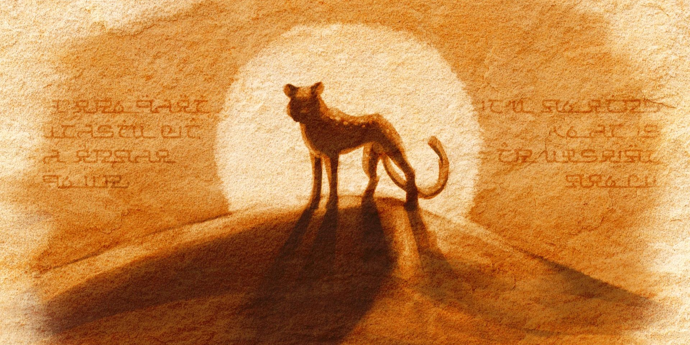
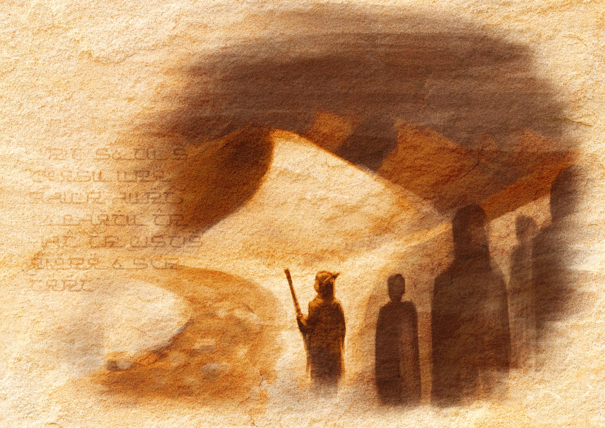
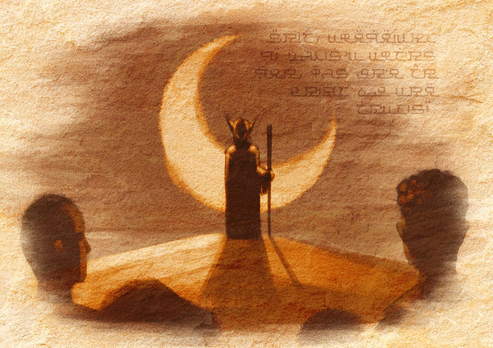
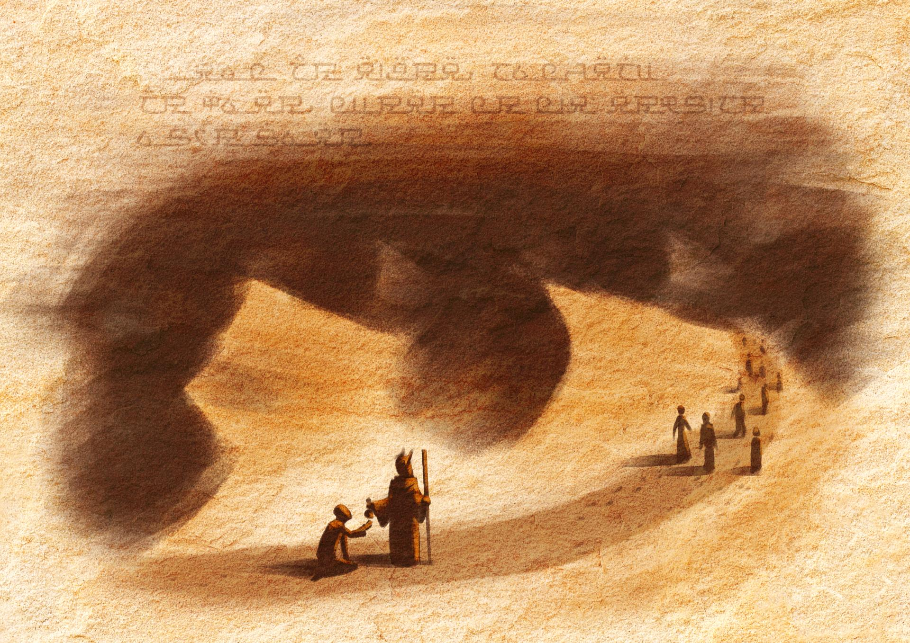
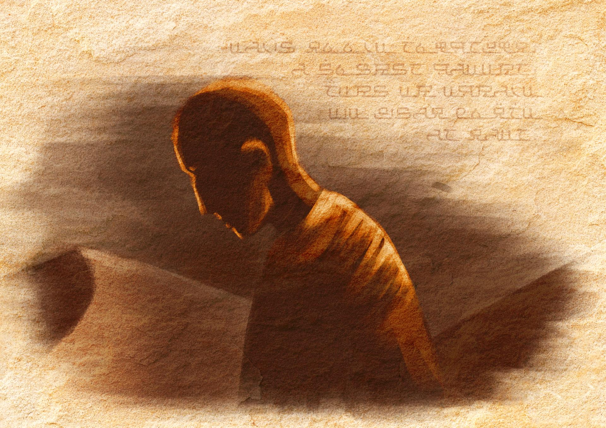

In my fourth year of CMD, I followed a minor called 'The Narrative'. This minor revolved around storytelling, and how to use it in different media. While working on my story, I studied different structures of storytelling, and did artistic research to find the best way to tell my story. I adapted my short story 'Echoes in the Sand' into an illustrated book.
The story
Echoes in the Sand is a short story about a group of 300 travelers who
venture into the desert to reach the southern shore, where their new
home awaits. Neith, the main character, leads the group, expecting to
be crowned queen upon her arrival in the promised land. She vows to
protect her people and ensure their survival in the harsh desert, but
as they journey deeper through the unforgiving sands, Neith's
leadership is put to the test.
Neith insists they follow
the course of a dried riverbed, believing it will lead them to water
and safety. However, the river twists and turns, lengthening their
journey and depleting their resources. As the group faces the
relentless heat and scarcity of water, tensions rise, and Neith must
make the impossible choice between her people's survival and her own
ambition.
Echoes in the Sand is set in a fictional world
I've spent years building. This story is one of many planned to take
place in this world. The book gives an insight into the world's
history, telling the story of how one of the greatest kingdoms was
founded. The book features some texts written in Sandscript, the
script used in this part of the fictional world. The story is set in a
desert known as the Dry Sea of Sahra, located in the south.
I
knew early on I wanted the story to feel like an ancient legend, a
story that is told within the world I have created. To achieve this, I
did a lot of research on how stories were told in ancient times. I
took inspitation from ancient Egyptian wall paintings, becoming the
basis for the art style of the book. I also looked at how stories were
often told in rhyme, and I decided to write my story in rhyme as well.
"Thousands of years in the past,
Mortals first dared the
desert vast.
A large group of humans and elvenkind,
The
southern shore they wished to find."
Symbolism
The story has many symbolic elements to enhance its themes and messages. The biggest example is the group of travelers. Each person in the group represents a different aspect of Neith's personality, and as the story progresses, they are slowly lost one by one, just as . Neith loses pieces of herself. The first person she is forced to leave behind is Nadia, whose name means 'hope'. Eakas is the most antagonistic character, and represents Neith's doubts. After she leaves him behind, no one in the group openly questions her leadership anymore, and she becomes more and more isolated. When she finally reaches the shore, she is a shell of her former self.

Hakim, Neith's advisor, mentions she is blessed by the Goddess of the
Moon, a part of the culture she came from. However, after Hakim is
left behind, a leopard appears on a dune's crest, bathing in the light
of the rising sun. On the other side of the dune, they finally reach
the shore. The leopard is an incarnation of the God of the Sun,
representing Neith leaving her Goddess behind as well. It is mentioned
there are ten Gods, but the travellers arrive at the shore with a
total of nine. This unholy number reflects the dark reality of Neith
leaving her people to die.
The last illustration in the book shows a crow looking back at the
desert. The crow's presence, who represents the God of Death, implies
the travellers left behind have met their fate.
"The ninth soul remains on the dune's crest,
His fearful gaze
to the desert pressed.
The sands are quiet, yet in his mind,
He
hears the echoes of those they left behind."



